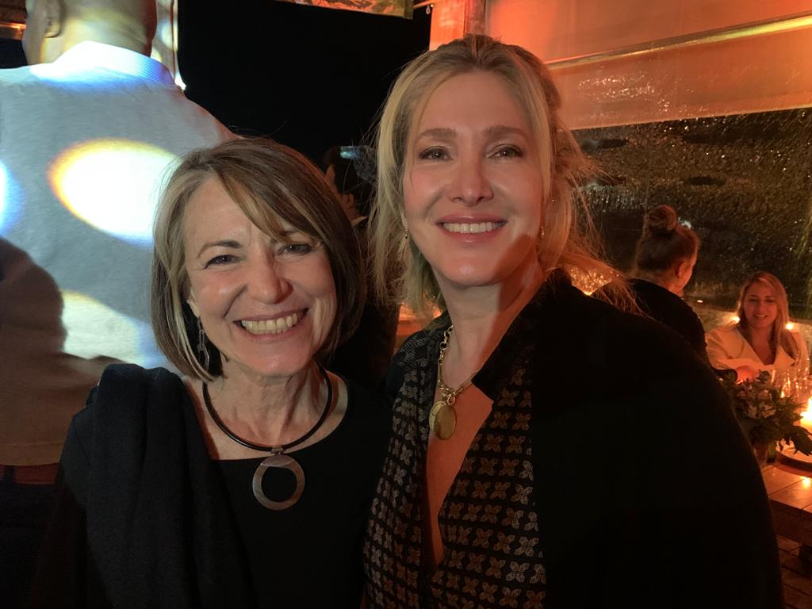
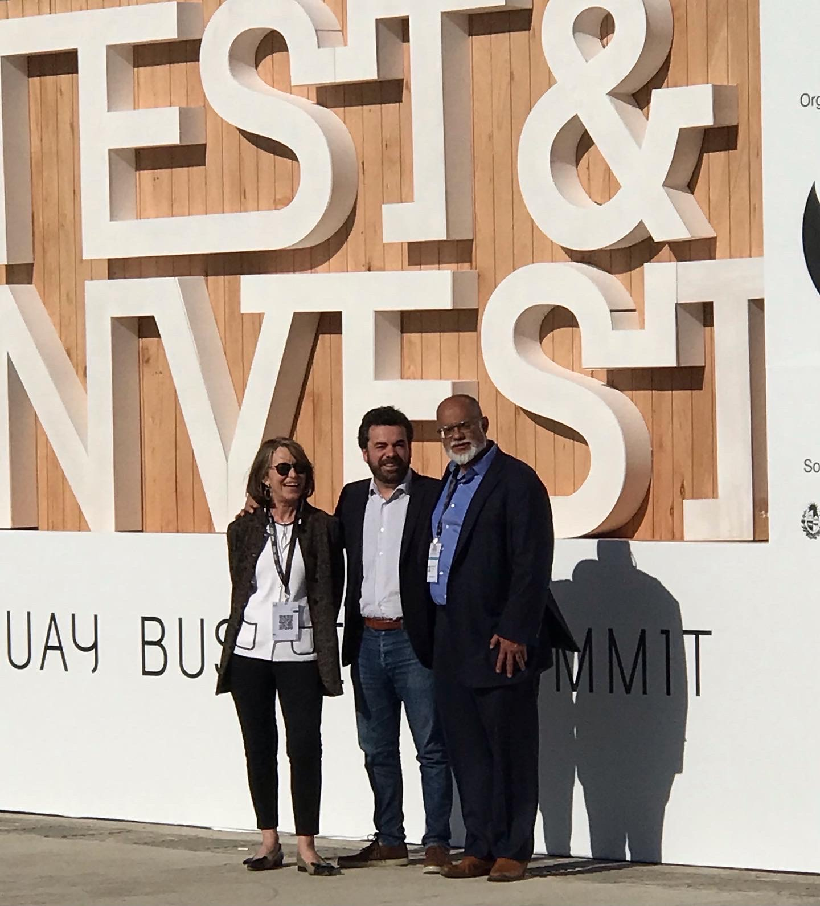
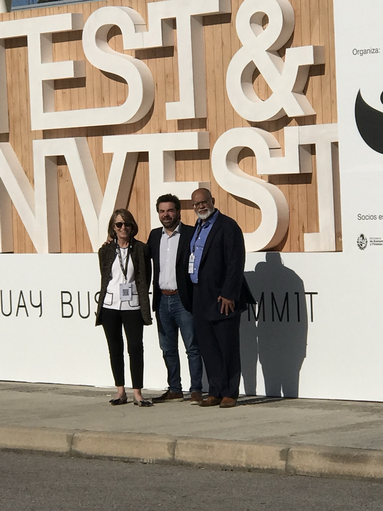
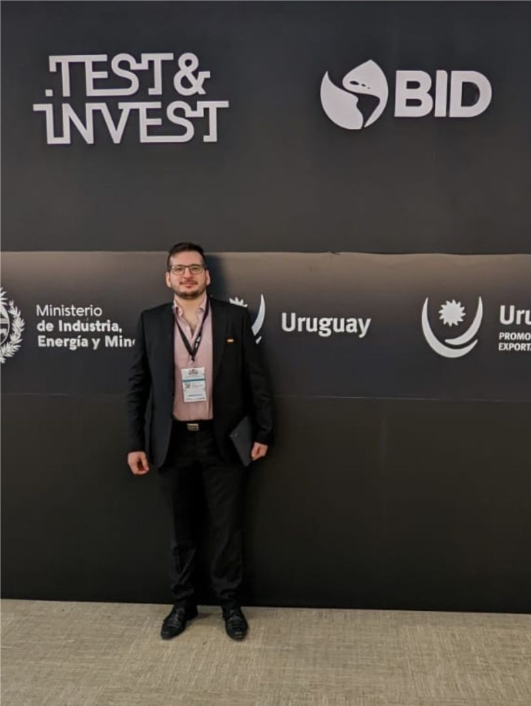
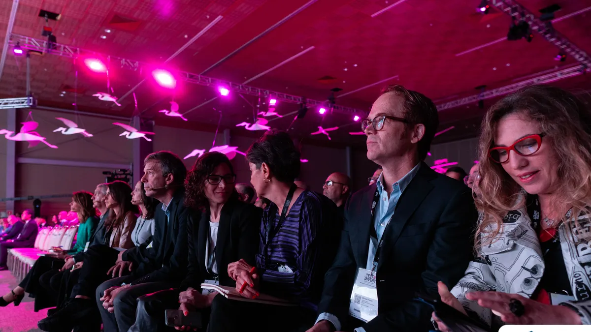
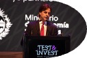

Overview
Uruguay hosted one of the most impactful IDB–ALF Investment Forums, designed to capitalize on the country’s reputation for political stability, institutional strength and business transparency. Long recognized as a safe haven for investors in Latin America, Uruguay used the forum to showcase its potential in renewable energy, logistics, technology and financial services.
Strategic Positioning
The mission highlighted Uruguay’s democratic tradition, high-quality infrastructure and renewable energy profile, with more than 90 percent of electricity generated from renewable sources. It also highlighted the country’s global leadership in wind and solar energy, IT services, agribusiness and logistics.
Program Architecture
- Plenary sessions with senior government officials presenting investment climate and incentives.
- Sectoral panels on renewable energy, agribusiness, technology and logistics.
- B2B matchmaking between international firms and Uruguayan entrepreneurs and exporters.
- Networking events in Montevideo designed to build lasting business relationships.
Outcomes & Legacy
The forum generated opportunities in renewable energy, agroindustrial partnerships, technology collaborations and logistics infrastructure, reinforcing Uruguay’s role as a gateway for trade in the Southern Cone.
“There was coherence throughout the event — from business leaders, government officials, and even the President. Everyone shared the same goal: stability and consistency.”
Uruguay — Test & Invest / IDB Investment Forum in Pictures
A visual record of institutional presentations, investment forums, B2B meetings and networking moments connected to this mission.





